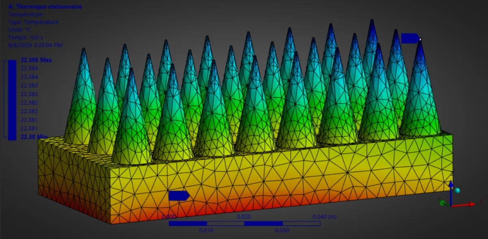

Case study 03 · Thermal design in progress
Conical pin-fin heat sink
Natural convection is the hard part of a heat-sink simulation: structural FEA will happily solve conduction and then quietly under-predict how much heat the air actually carries away. This project couples the two sides deliberately.
The question
Pin fins are the standard way to add surface area to a heat sink, but the fin itself is only half the problem. Heat leaves the metal through the boundary layer of air around it, and in natural convection that boundary layer is thin, buoyant and very sensitive to spacing. Optimising the metal without modelling the air optimises the wrong thing.
The aim was a heat sink that removes the same heat with less material, and to build the analysis engine behind that claim rather than trust a black box.
Approach
-
01
Static thermal FEA engine
A MATLAB model built on the PDE Toolbox solves conduction through the base and the conical fins, driven by a heat-flux boundary condition at the die.
-
02
Correcting the fluid side
Raw structural FEA has no idea air is moving. Empirical Elenbaas boundary-layer correlations provide the convective coefficient on the fin surfaces, so natural convection enters the solve as a calibrated boundary condition.
-
03
Geometry iteration
Conical pin profiles modelled in SolidWorks, with taper, spacing and base thickness varied to trade surface area against mass.
-
04
Compare and trade
Each configuration is compared on junction temperature and total mass, the two numbers that decide whether a design is worth manufacturing.
Configuration
Figure

The reason the result is so flat is that nothing was taking the heat away. A thermal FEA solves conduction inside the solid and stops at the surface; the baseline run fixed that surface at a single temperature, which quietly assumes the air is removing whatever arrives. In reality the air over a fin is the whole bottleneck: it is buoyancy-driven, it thickens along each surface, and its temperature rises as it climbs, so the local convection coefficient changes from the base of a pin to its tip. With that missing, the pins carry heat perfectly well up to a boundary that cannot shed it, and every configuration ends up looking alike.
That is the finding the project turned on. The FEA alone does not answer the question, so the model was rebuilt to put the air back in: Elenbaas correlations supply a convection coefficient on each fin surface, the solid solve is iterated against them, and the surface temperature is no longer imposed but solved. The figures reported above come from that coupled model; the plot on this page is the conduction-only run it was built to correct.
Reported result
38.5%
Mass reduction
relative to the reference heat sink
37.5 °C
Lower junction temperature
at the same heat load
1-D
Coupling strategy
FEA conduction + correlation-based convection
These are model outputs, not bench measurements. The coupling is the part to scrutinise: using correlations instead of solving the flow field means the design is only as good as the correlation range it sits in, which is exactly the limitation to test next.
Still open
- Mesh-independence check on the fin tips, where the temperature gradient is steepest.
- Validation of the Elenbaas estimate against a conjugate CFD solve of a single fin.
- Publishing the MATLAB engine and the design write-up.
Tools
- MATLAB PDE Toolbox
- SolidWorks
- Finite element analysis
- Conjugate heat transfer
- Elenbaas correlations
- Parametric geometry